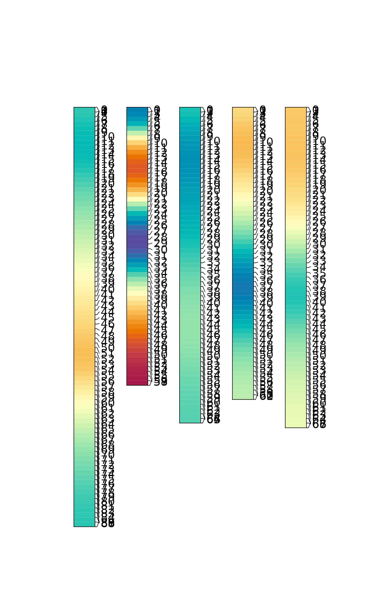
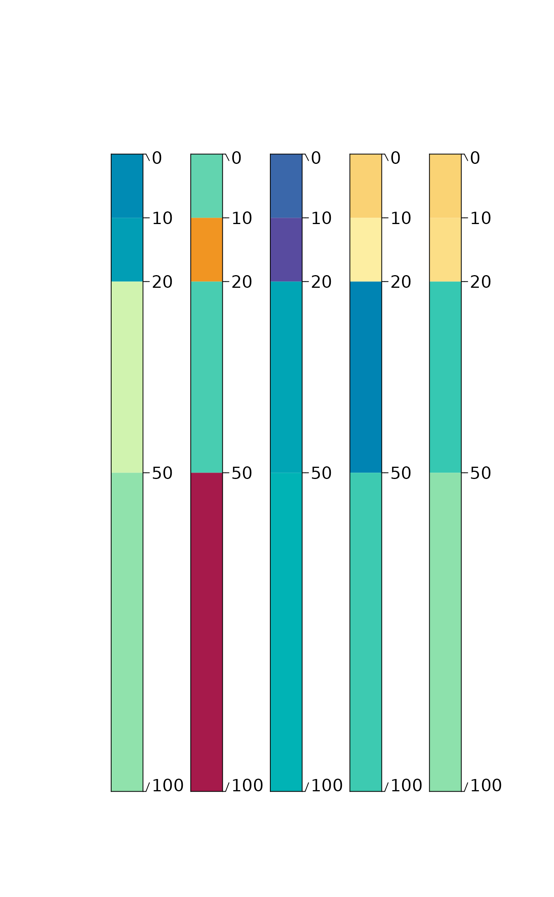
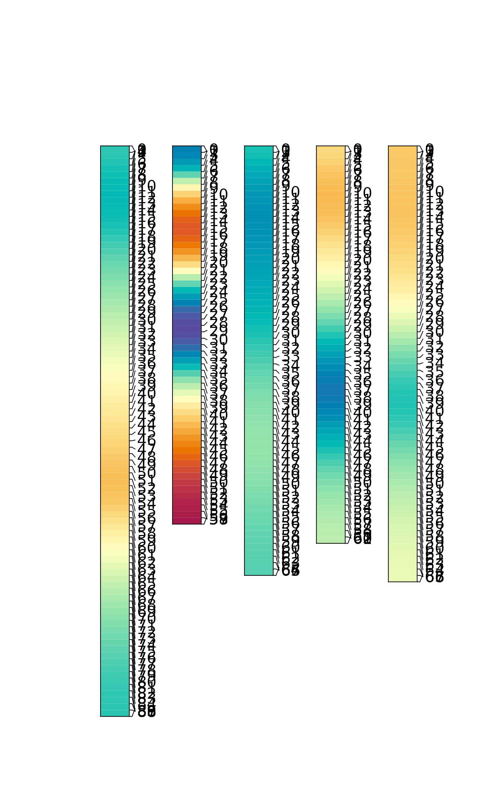
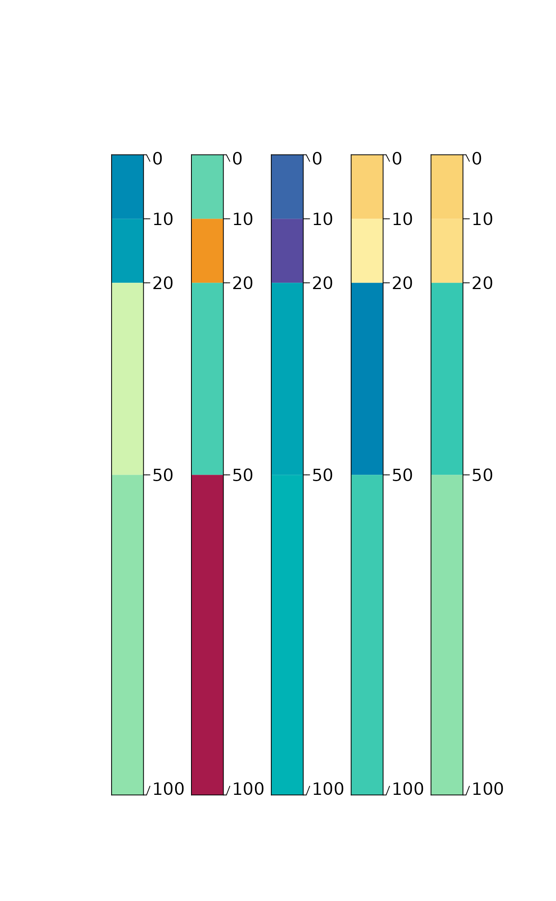

SoilProfileCollection wrapper for mpspline2::mpspline()
Source: R/spc2mpspline.R
spc2mpspline-SoilProfileCollection-method.RdGenerate mass-preserving splines for any numeric attribute in a
SoilProfileCollection using mpspline2::mpspline(). mpspline2 implements the
method described in Bishop et al. (1999).
Usage
# S4 method for class 'SoilProfileCollection'
spc2mpspline(
object,
var_name = NULL,
method = c("est_1cm", "est_icm", "est_dcm"),
pattern = "R|Cr|Cd|m",
hzdesgn = NULL,
...
)Arguments
- object
A SoilProfileCollection
- var_name
Column name(s) in
@horizonsslot ofobjectcontaining numeric values to spline- method
Options include "est_1cm" (default; 1cm estimates), "est_icm" (estimates over original layer boundaries), "est_dcm" (estimates over constant interval, specified with
dargument tompspline3::mpspline()). Default value fordisc(0, 5, 15, 30, 60, 100, 200).- pattern
Regex pattern to match for bottom of profile (passed to
minDepthOf()) default: "R|Cr|Cd|m"; only used ifhzdesgnis specified- hzdesgn
Column name in
@horizonsslot ofobjectcontaining horizon designations default:NULL- ...
Additional arguments to
mpspline2::mpspline()
Value
A SoilProfileCollection with 1cm slices. Spline variables are in
columns prefixed with "spline_" and RMSE/RMSE_IQR are in columns prefixed
with "rmse_". If any profiles were removed from the collection, their
profile IDs are stored in attr(result, 'removed').
Details
This function now relies on the missing data checks provided by the
mpspline2 package. See attr(..., 'removed') to see whole profiles that
were removed from the set. Horizons containing NA in the property of
interest are dropped with a message.
Data completeness is assessed and the input SoilProfileCollection is
filtered and truncated to create a container for the results from
mpspline2::mpspline().
References
Bishop, T.F.A., McBratney, A.B., Laslett, G.M. (1999) Modelling soil attribute depth functions with equal-area quadratic smoothing splines. Geoderma 91(1–2), pp. 27-45. doi:10.1016/S0016-7061(99)00003-8
O'Brien, Lauren (2025). mpspline2: Mass-Preserving Spline Functions for Soil Data. R package version 0.1.9. https://cran.r-project.org/package=mpspline2
Examples
data(sp1)
depths(sp1) <- id ~ top + bottom
hzdesgnname(sp1) <- "name"
# run on a single variable
res <- spc2mpspline(sp1, "prop")
# plot single-variable result
plotSPC(res[1:5, ], color = "prop_spline", divide.hz = FALSE)
 # add a second continuous numeric variable for demonstration
sp1$value2 <- runif(nrow(horizons(sp1)))
# run on multiple variables
res2 <- spc2mpspline(sp1, c("prop", "value2"))
# plot multi-variable result
plotSPC(res2[1:5, ], color = "value2_spline", divide.hz = FALSE)

# run on multiple variables with custom depth intervals
res3 <- spc2mpspline(sp1,
c("prop", "value2"),
method = "est_dcm",
d = c(0, 10, 20, 50, 100))
plotSPC(res3[1:5, ], color = "value2_spline", divide.hz = FALSE)

# add a second continuous numeric variable for demonstration
sp1$value2 <- runif(nrow(horizons(sp1)))
# run on multiple variables
res2 <- spc2mpspline(sp1, c("prop", "value2"))
# plot multi-variable result
plotSPC(res2[1:5, ], color = "value2_spline", divide.hz = FALSE)

# run on multiple variables with custom depth intervals
res3 <- spc2mpspline(sp1,
c("prop", "value2"),
method = "est_dcm",
d = c(0, 10, 20, 50, 100))
plotSPC(res3[1:5, ], color = "value2_spline", divide.hz = FALSE)
